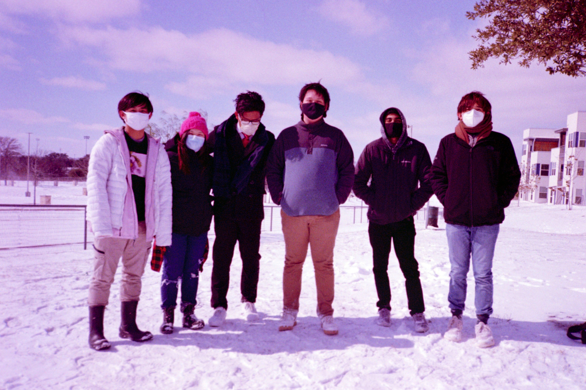
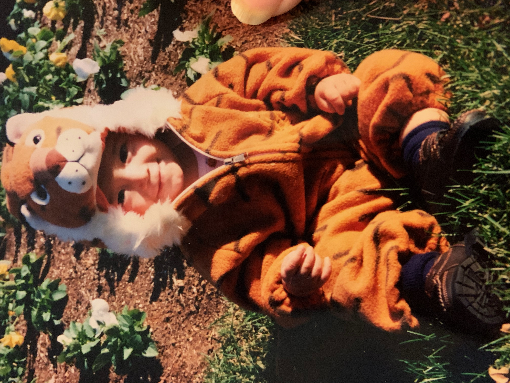

Howdy! My name is Aaron Barbosa and I am currently a junior Computer Engineering
student here at Texas A&M. I was born in Fairfax, Virginia and from there lived abroad in Milan, Italy before I moved
back to the US and settled down in Cypress, Texas. From there I attended Cypress Ranch Highschool and graduated with
honors before attending Texas A&M in 2019. Overall, I would like to think that I am a fairly hardworking and happy-go-lucky person with a strong desire to improve myself in any way possible. In my free time, I enjoy biking around campus and back home with a side of film photography. I find not knowing the results
of a shoot more exciting for when I get back my developed film. My cat Koko is the best and keeps me in high spirits whenever I am feeling stressed out or am burnt out from studying all day.

From there I've enjoyed my time here at A&M by attending my classes, joining a few clubs, and meeting all kinds of new people.
I've been lucky enough to join an incredible research team here under the department of material science and engineering where I work with
incredibly smart and talented people to solve real-world problems. You can learn more about my research here!

I am currently an officer for a club here at TAMU called "TidalTAMU". Tidal is essentially a research-based machine learning and computer science
club that accepts students of all majors to help them learn more about what machine learning and programming can do to solve real-world problems. If any of that
sounds interesting to you, you can find out more information about the club and their projects here and you can talk to all the other officers on discord here.
Feel free to reach out to me if any of this has interested you and you would like to speak more about my professional background or more about my personal information.